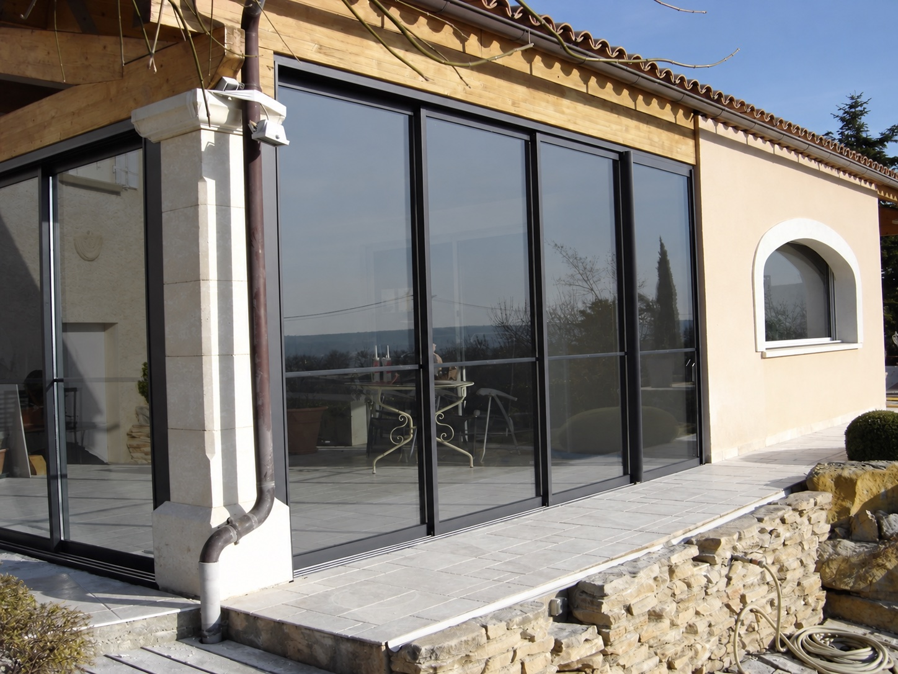

Chantiers résidentiels · Baies vitrées
Des films solaires pour la maison.
Le bon degré de clarté.
Sur une baie vitrée, le film peut rester presque transparent ou apporter une teinte solaire plus marquée tout en laissant entrer la lumière. Nous adaptons le rendu à l’exposition, au vitrage et au confort recherché.
← Toutes les réalisationsFilm solaire transparent
Garder la vue.
Filtrer en toute discrétion.
Un film solaire clair convient lorsque l’on souhaite préserver la transparence de la baie et son apport de lumière naturelle. Sa discrétion optique n’empêche pas de traiter une partie des apports solaires et des UV, selon la référence choisie.
La composition du vitrage, son exposition et la face de pose sont vérifiées avant de retenir un film. Chaque projet se choisit avec les caractéristiques techniques de la référence posée.
- Vitrages coulissants et grandes baies.
- Rendu très clair et vue extérieure conservée.
- Protection solaire et UV à choisir selon le produit.



Film solaire à teinte plus marquée
Modérer la vue directe.
Garder la pièce lumineuse.
Pour les baies où l’on souhaite atténuer la vue directe et les apports solaires, une teinte plus soutenue peut être étudiée. La lumière transmise et la transparence varient selon le film retenu.
Le choix tient compte de l’usage de la pièce, de la vue extérieure souhaitée et du type de vitrage. La teinte visible sur une photo dépend également de la lumière et des reflets au moment de la prise de vue.
- Une teinte solaire avec visibilité partielle à travers le vitrage.
- Un niveau de lumière naturelle défini selon le besoin.
- Une vérification technique du vitrage avant préconisation.

Un choix sur mesure
Votre vitrage.
Votre équilibre de lumière.

Traiter les vitrages en toiture
Prendre en compte la chaleur, l’accès et les supports particuliers.
Voir les solutions ↗
Comprendre l’efficacité réelle
Les facteurs qui influencent le confort après la pose.
Lire les repères ↗Notre savoir-faire de pose
Du diagnostic du vitrage jusqu’aux finitions.
Notre méthode ↗Films solaires · Maisons et appartements
Une baie trop exposée ?
Parlons du bon film.
Nous étudions la composition de votre vitrage, l’orientation de la baie et le niveau de lumière souhaité.